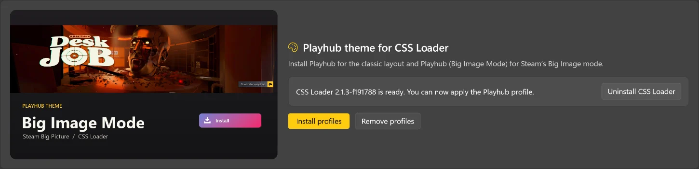
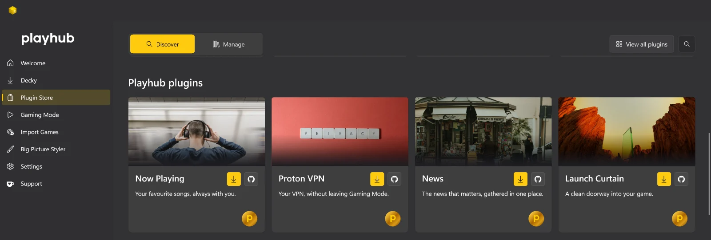
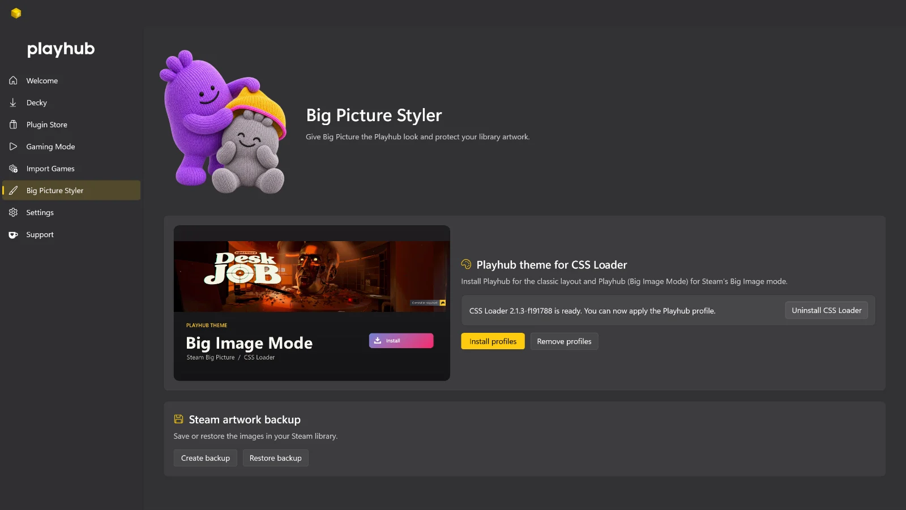
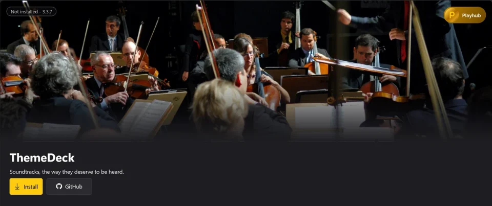
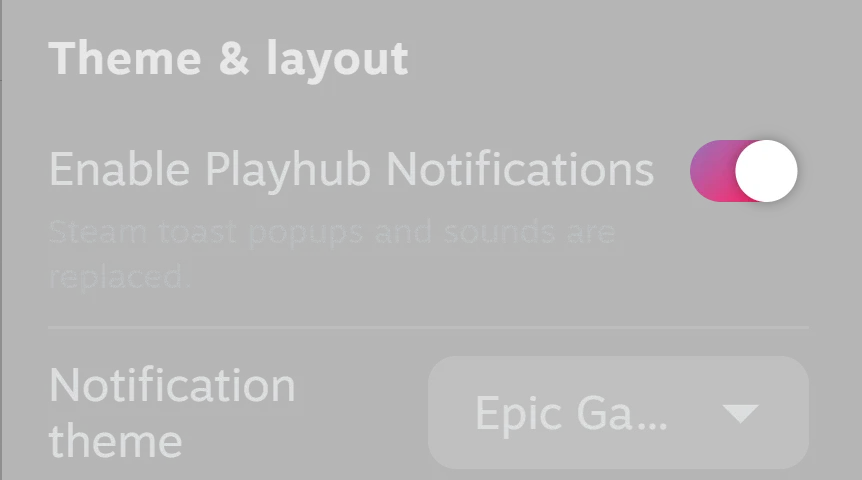
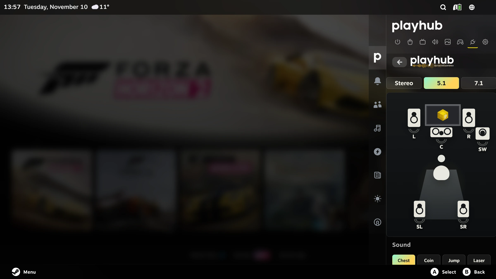
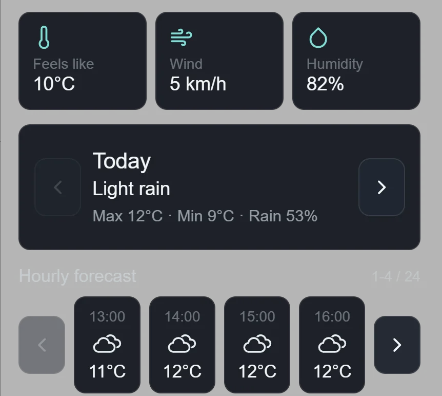
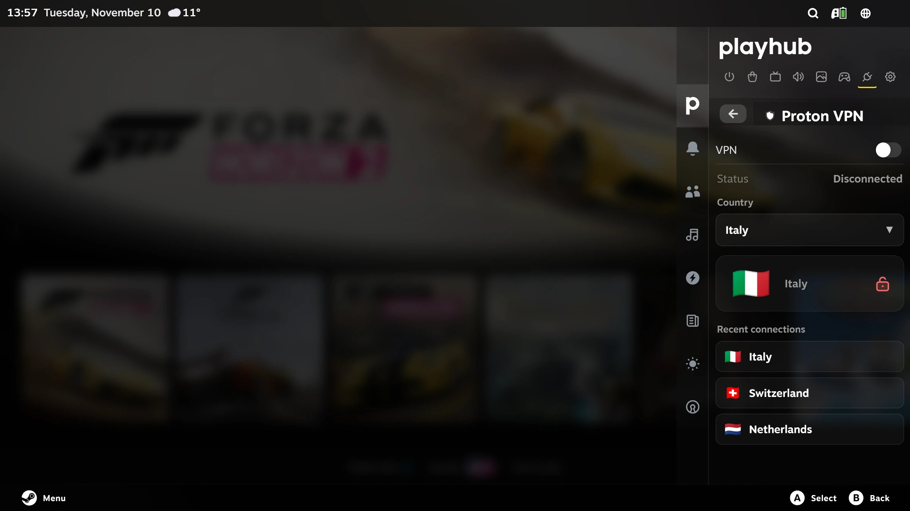

Gaming Mode
From desktop
to Big Picture.
Start in Steam’s controller-friendly interface. Play a game, return to your library, or switch back to the Windows desktop when you need it.
Bring your games into Steam, make Big Picture yours, and pick up a controller.
Free and open source Windows 10 / 11

Playhub sets up the parts of Windows gaming that matter when you’re sitting a few metres from the screen.
Gaming Mode
Start in Steam’s controller-friendly interface. Play a game, return to your library, or switch back to the Windows desktop when you need it.
Import Games
Add games from Xbox, Microsoft Store, Epic and GOG to Steam, then choose the artwork you want to see in your library.

Plugin Store
Set up Decky and manage your plugins in Playhub. Discover new releases and browse plugins from Decky Store and the community.

Big Picture Styler
Set the mood with Playhub themes and a ready-to-use CSS Loader profile for Big Picture.





Change how your library looks, what happens when a game starts, and what’s within reach in Steam’s Quick Access Menu.

Switch between games and apps from the dashboard, then return to Windows with Switch Mode. Catch up on gaming news, revisit a moment in gaming history or pick a screensaver.


Choose covers, backgrounds, logos and icons right from your Steam library.

Bring game details, achievements and activity to supported non-Steam games.

Play game trailers directly on library pages as you browse.

Listen to game soundtracks as you move through your Steam library.

Give each game a full-screen artwork transition while it loads.

Browse and control Spotify, YouTube Music and local tracks with a controller.



Personalize Big Picture’s notifications, sounds and volume indicator.

Configure stereo, 5.1 or 7.1 and test each speaker from the sofa.

Read headlines in Quick Access or browse your feeds in a full-screen Newsstand.

See current conditions, an hourly outlook and the five-day forecast in Quick Access.

Control the Windows Proton VPN client from Steam’s Quick Access Menu.
Grab the Windows setup, then let Playhub guide you through Steam, Decky and Gaming Mode.
Windows 11 x64 recommended Windows 10 supported

Stuck getting started? Ask the Playhub community about setup, Gaming Mode, or using Decky on Windows.